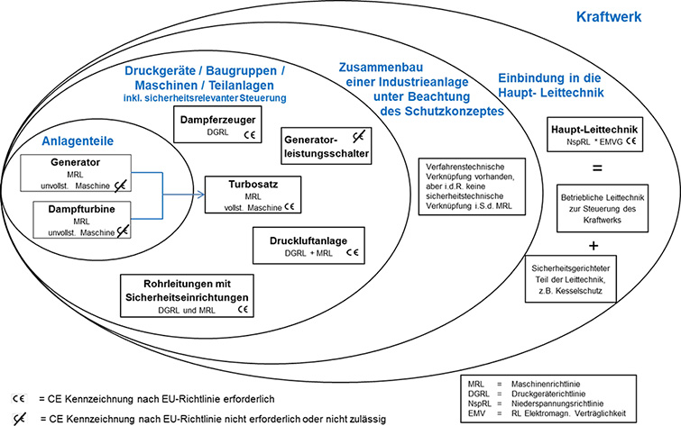

(1) Bei der Beschaffung von Arbeitsmitteln bis hin zu komplexen Anlagen (Fertigungsstraßen, Chemieanlagen, Kraftwerke etc.) gibt es häufig keinen Auftragnehmer, der alle Bestandteile einer solchen Anlage liefern und die Verantwortung übernehmen kann. In diesem Fall beschafft der Arbeitgeber die notwendigen Bestandteile der Anlage als einzelne Produkte (z. B. Maschinen, Druckgeräte, Rohrleitungen, Steuerungen) von unterschiedlichen Auftragnehmern und übernimmt die Verantwortung dafür, dass die fertige komplexe Anlage den rechtlichen Anforderungen entspricht und sicher verwendet werden kann.
(2) Das EU-Binnenmarktrecht regelt das Bereitstellen von sicheren Produkten auf dem Markt, d. h. die jeweiligen Auftragnehmer sind dafür verantwortlich, dass die für ihre Produkte geltenden Harmonisierungsrechtsvorschriften eingehalten werden.
(3) Ein komplexes Arbeitsmittel/komplexe Anlage kann als Ganzes in den Anwendungsbereich einzelner Harmonisierungsrechtsvorschriften fallen, wenn ein sicherheitstechnischer Zusammenhang der einzelnen Bestandteile im Sinne der jeweiligen EU-Harmonisierungsrechtsbestimmungen besteht.
(4) Innerhalb von komplexen Arbeitsmitteln/komplexen Anlagen werden zum Teil auch Anlagenteile eingesetzt, für die es keine EU-Binnenmarktrichtlinie gibt. Für die Gewährleistung des sicheren Betriebes können somit auch Anforderungen aus den nicht harmonisierten Bereichen herangezogen werden.
(1) Wenn bei der Beschaffung eines komplexen Arbeitsmittels einzelne Bestandteile als einzelne Produkte oder als Teilanlagen bei unterschiedlichen Auftragnehmern zugekauft werden, sind die Schritte des Beschaffungsprozesses gemäß Abschnitt 4 zugrunde zu legen.
(2) In den Spezifikationen empfiehlt es sich, die Liefergrenzen eindeutig zu beschreiben. In den von den Auftragnehmern mitzuliefernden technischen Informationen oder Betriebsanleitungen müssen etwaige Restrisiken unter Berücksichtigung der Grenzen innerhalb des komplexen Arbeitsmittels beschrieben sein. Wenn das Schutzkonzept es zulässt, hat der Arbeitgeber die Möglichkeit, den Lieferumfang so festzulegen, dass die von verschiedenen Auftragnehmern gelieferten Anlagenteile sicherheitstechnisch unabhängig voneinander betrieben werden können.
(3) Bei der Erstellung der Spezifikationen empfiehlt es sich, darauf zu achten, dass nicht nur der Lieferumfang des Auftragnehmers in Bezug auf das von ihm zu liefernde Produkt eindeutig festgelegt wird, sondern auch der Umfang von zusätzlich zu erbringenden Leistungen und mitzuliefernden Unterlagen. Dies gilt zum Beispiel für die Durchführung von Konformitätsbewertungsverfahren und die Ausstellung der Konformitätserklärung für vollständige Maschinen, Gesamtheiten von Maschinen oder Baugruppen, deren einzelne Bestandteile von verschiedenen Auftragnehmern geliefert oder vom Arbeitgeber beigestellt werden können.
Beispiel 1: Maschinen
Es sollen mehrere Maschinen produktionstechnisch miteinander verknüpft werden. Wenn alle Maschinen gemäß dem Schutzkonzept einzeln so abgesichert sind, dass ein sicherheitsrelevantes Ereignis nicht zu einer Gefährdung an einer anderen Maschine führt, reichen die Konformitätserklärungen für die einzelnen Maschinen aus (siehe dazu auch § 38 des Leitfadens der EU-Kommission zur Anwendung der Maschinenrichtlinie).
Wenn gemäß dem Schutzkonzept zwischen diesen Maschinen auch ein sicherheitstechnischer Zusammenhang besteht, d. h. ein sicherheitsrelevantes Ereignis auch zu einer Gefährdung an einer anderen Maschine führen kann, ist für diese Gesamtheit die MRL anzuwenden und festzulegen, wer die Herstellerverantwortung übernimmt (siehe dazu Interpretationspapier des BMAS zur MRL).
Beispiel 2: Druckgeräte
Es sollen mehrere Druckgeräte beschafft werden. Wenn diese Druckgeräte gemäß dem Schutzkonzept des Arbeitgebers einzeln gegenüber der Druckgefährdung abgesichert sind, reichen die Konformitätserklärungen für die einzelnen Druckgeräte aus.
Besteht zwischen den Druckgeräten ein sicherheitstechnischer Zusammenhang, d. h. mehrere Druckgeräte sind z. B. über ein gemeinsames Sicherheitsventil gegen die Druckgefährdung abgesichert, kann ein Konformitätsbewertungsverfahren gemäß § 13 Absatz 2 der 14. ProdSV notwendig sein, sofern es sich bei den verbundenen Druckgeräten um eine funktionale Einheit handelt (z. B. bei Dampfkesseln).
(5) Es wird empfohlen, die zu beschaffenden Bestandteile eines komplexen Arbeitsmittels mit den für sie geltenden Harmonisierungsrechtsvorschriften aufzulisten. Der Arbeitgeber sollte sich diesbezüglich mit den jeweiligen Auftragnehmern abstimmen und die Verantwortlichkeiten und den Dokumentationsumfang frühzeitig vertraglich regeln. Ein Beispiel für eine solche Übersicht ist Tabelle 1 zu entnehmen. Es können weitere Richtlinien anwendbar sein.
Tab. 1 Beispiele für Bestandteile eines komplexen Arbeitsmittels mit möglicher Zuordnung für ausgewählte EU-Richtlinien
| Beispiele für Bestandteile von komplexen Arbeitsmitteln mit möglicher Zuordnung zu ausgewählten EU-Richtlinien | MRL | NSpRL | DGRL | ATEX |
| Pumpenaggregat 1 | X | X1 | ||
| Pumpenaggregat 2 im Ex-Bereich | X | X1 | X | |
| Angetriebene Armatur, Betriebsdruck ≤ 0,5 bar | X | |||
| Angetriebene Armatur, Betriebsdruck > 0,5 bar und > Kat. I | X | X | ||
| Angetriebene Armatur im Ex-Bereich, Betriebsdruck ≤ 0,5 bar | X | X | ||
| Druckgeräte, Baugruppen > 0,5 bar | X | |||
| Kompressor Anlage 1 | X | X1, 2 | ||
| Kompressor Anlage 2 im Ex-Bereich | X | X1, 2 | X | |
| Turbinen – Generatorsatz | X | |||
| Krananlagen/Lastaufnahmemittel | X | |||
| Krananlagen/Lastaufnahmemittel im Ex-Bereich | X | X | ||
| Niederspannungs-Schaltanlagen | X | |||
| Mittel- & Hochspannungs-Anlagen (> 1 kV)3 | ||||
| Maschinensteuerschrank ohne Sicherheitsfunktion, separat in Verkehr gebracht | X | |||
| Niederspannungs-Transformator | X | |||
| Generatorableitung > 1 kV3 |
(1) Beim Zusammenbau einer Industrieanlage muss der Arbeitgeber sicherstellen, dass die im Schutzkonzept der Anlage festgelegten Anforderungen insbesondere an den Schnittstellen zwischen einzelnen Produkten oder Anlagenteilen eingehalten werden, damit die Gefährdung so gering wie möglich ist und sich keine neuen Gefährdungen ergeben.
(2) Die Betriebssicherheitsverordnung verlangt von einem Arbeitgeber, dass
Beide Anforderungen muss der Arbeitgeber auch beim Zusammenbau eines komplexen Arbeitsmittels erfüllen.
(3) Beim Zusammenbau von Produkten verschiedener Auftragnehmer kommt der Bewertung der Schnittstellen zwischen den jeweiligen Anlagenteilen durch den Arbeitgeber (Schutzkonzept) eine große Bedeutung zu. Dabei sind die sicherheitsrelevanten Hinweise aus den Betriebsanleitungen für die einzelnen Anlagenteile zu beachten.
(4) Im Rahmen der Gefährdungsbeurteilung muss der Arbeitgeber weitere Gefährdungen berücksichtigen, die nicht unmittelbar vom Arbeitsmittel ausgehen, sondern die sich insbesondere aus der Arbeitsumgebung, den verwendeten Arbeitsstoffen und den durchzuführenden Tätigkeiten ergeben. Die Gefährdungsbeurteilung ist während des Zusammenbaus der einzelnen Anlagenteile zu einer immer größer werdenden Anlage als begleitender Prozess zu verstehen.
(5) Ein Beispiel für den Zusammenbau einer Industrieanlage ist in Abbildung 7 anhand eines Kraftwerks dargestellt.
Im ersten Schritt werden z. B. ein Generator und eine Dampfturbine von zwei verschiedenen Auftragnehmern als unvollständige Maschinen beschafft, die im nächsten Schritt zu einer vollständigen Maschine "Turbosatz" zusammengebaut werden müssen. In diesem Fall sollte vertraglich vereinbart werden, wer die Verantwortung als Hersteller der vollständigen Maschine übernimmt (der Arbeitgeber oder einer der beiden Auftragnehmer der unvollständigen Maschinen).
Anschließend werden die weiteren Bestandteile der Industrieanlage – einzelne Druckgeräte oder Baugruppen, Maschinen, Gesamtheiten von Maschinen und Teilanlagen, auch solche, die keiner Harmonisierungsvorschrift unterliegen (z. B. Generatorleistungsschalter) – unter Beachtung des Schutzkonzeptes nach und nach zusammengebaut. Dabei werden die notwendigen sicherheitsrelevanten Steuerungen der einzelnen Anlagenteile (z. B. Dampferzeuger, Turbosatz, Maschinen) entweder in Vor-Ort-Steuerungen realisiert oder durch Einbindung in den sicherheitsgerichteten Teil der Haupt-Leittechnik (z. B. Kesselschutz).
Im letzten Schritt erfolgt die Einbindung aller Anlagenteile in die Haupt-Leittechnik. Dabei wird unterschieden zwischen dem betrieblichen Teil der Leittechnik und dem sicherheitsgerichteten Teil der Leittechnik. Die betriebliche Leittechnik steuert den Kraftwerksprozess, während der sicherheitsgerichtete Teil gewährleistet, dass die darüber gesteuerten Anlagenteile bei einem Ereignis in einen sicheren Anlagenzustand überführt werden, damit keine Gefährdungen von Beschäftigten oder anderen Personen auftreten.
Beispiel:
Ein Dampferzeuger ist in Betrieb und erzeugt Heißdampf, der dem Turbosatz zugeleitet wird. In der Turbine kommt es zu einem Lagerschaden. Die Turbinensteuerung (sicherheitsgerichtet) führt zur Schnellabschaltung der Turbine, um Gefährdungen, die von der Turbine selbst ausgehen, zu verhindern.
Der Lagerschaden der Turbine führt nicht unmittelbar zu einer Gefährdung im Bereich des Dampferzeugers. Dennoch gibt es ein betriebliches Signal, dass die Turbine ausgefallen ist. Dies kann z. B. dazu führen, dass auf eine zweite, redundante Turbine umgeschaltet wird, ohne dass der Kesselbetrieb eingestellt werden muss.
Gibt es nur eine Turbine, kann das betriebliche Signal über den Ausfall der Turbine dafür sorgen, dass der Heißdampf über eine Umleitstation abgeleitet und der Dampferzeuger abgefahren wird. Eine sicherheitsrelevante Gefährdung des Dampferzeugers besteht dadurch aber nicht.
Nur wenn die Auslegungswerte des Dampferzeugers selbst überschritten werden (z. B. Druck zu hoch) greifen die zur Absicherung der Druckgefährdungen festgelegten Schutzmaßnahmen im sicherheitsgerichteten Teil der Leittechnik.

Abb. 7 Abb. 7 Zusammenbau einer Industrieanlage am Beispiel eines Kraftwerks
(1) Für eine komplexe Anlage als Arbeitsmittel ist es notwendig, zu dokumentieren, dass sowohl die produktrechtlichen Anforderungen als auch die betrieblichen Anforderungen erfüllt sind. Hierzu gehören im Wesentlichen folgende Nachweise:
(2) Bevor ein komplexes Arbeitsmittel in Betrieb genommen wird, müssen die für einzelne Bestandteile zutreffenden Prüfungen gemäß § 14 und § 15 i. V. m. Anhang 2 und 3 BetrSichV durchgeführt und die Prüfungen dokumentiert werden.
| 1 | Wenn der Druck das ausschlaggebende Konstruktionskriterium ist. |
| 2 | Druckbehälter, sofern diese nicht unter die 6. ProdSV fallen. |
| 3 | Diese Anlagen fallen nicht unter eine der genannten EU-Richtlinien. |